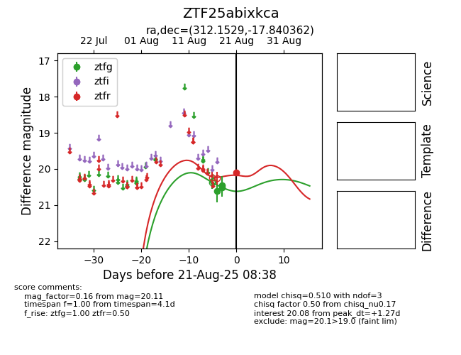

Target ZTF25abixkca at 2025-08-21 08:38, see:
FINK: fink-portal.org/ZTF25abixkca
Lasair: lasair-ztf.lsst.ac.uk/objects/ZTF25abixkca
ALeRCE: alerce.online/object/ZTF25abixkca
alt names
ZTF25abixkca (ztf,alerce)
coordinates:
equatorial (ra, dec) = (312.1529,-17.84036)
galactic (l, b) = (28.7786,-33.65659)
photometry
last ztfg=20.45, ztfr=20.11
3 ztfg, 1 ztfr detections
